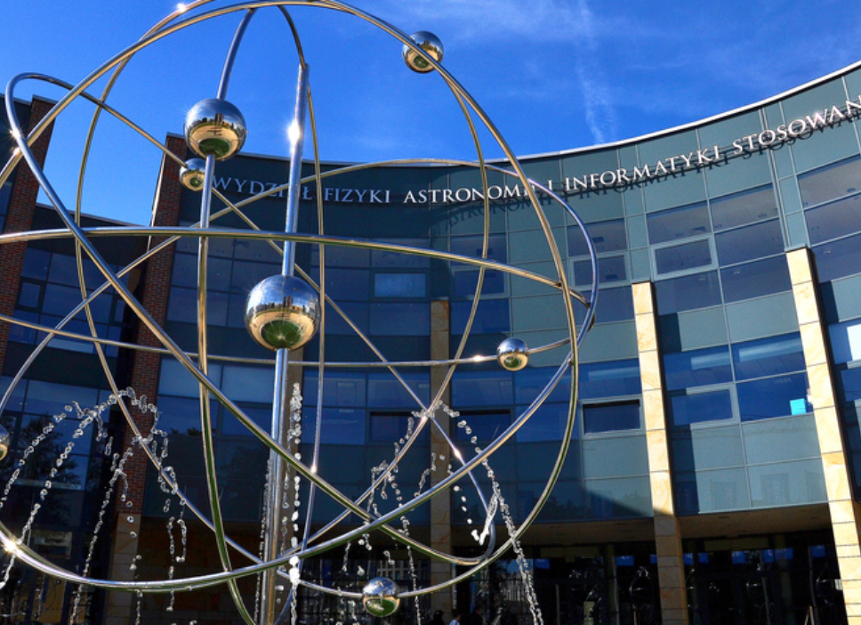
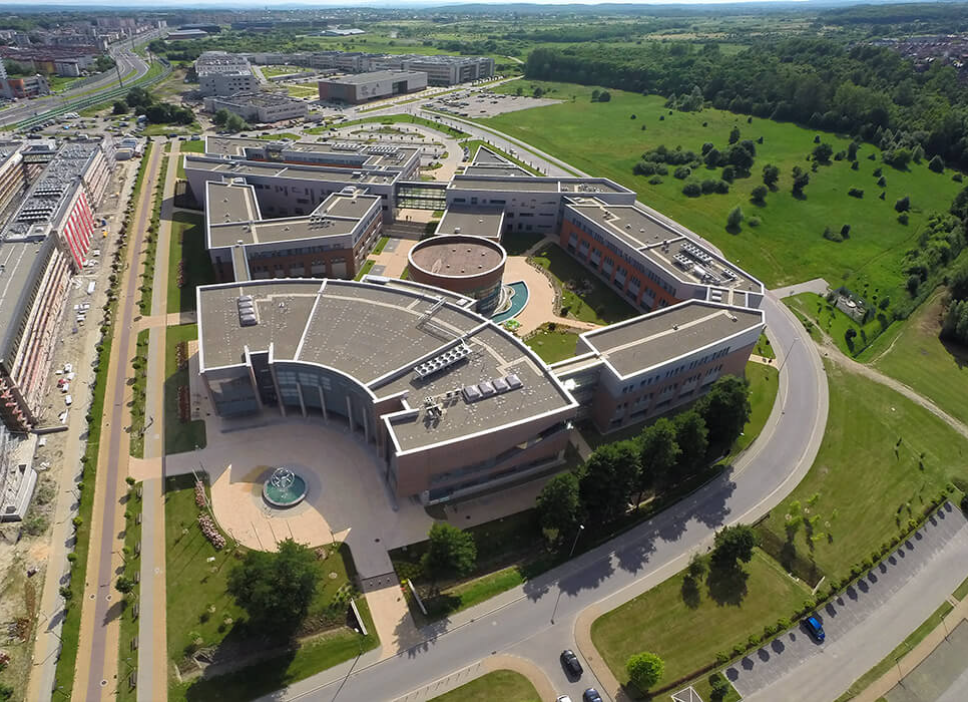
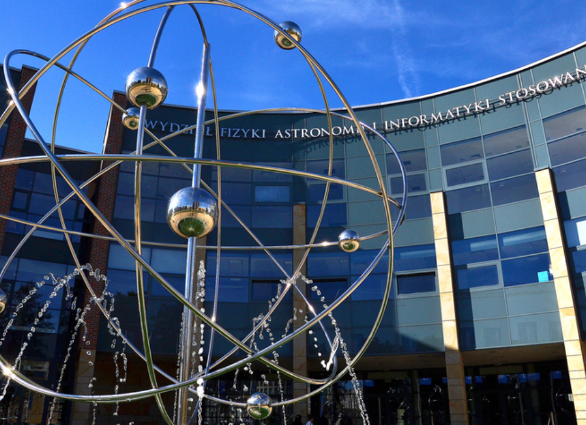
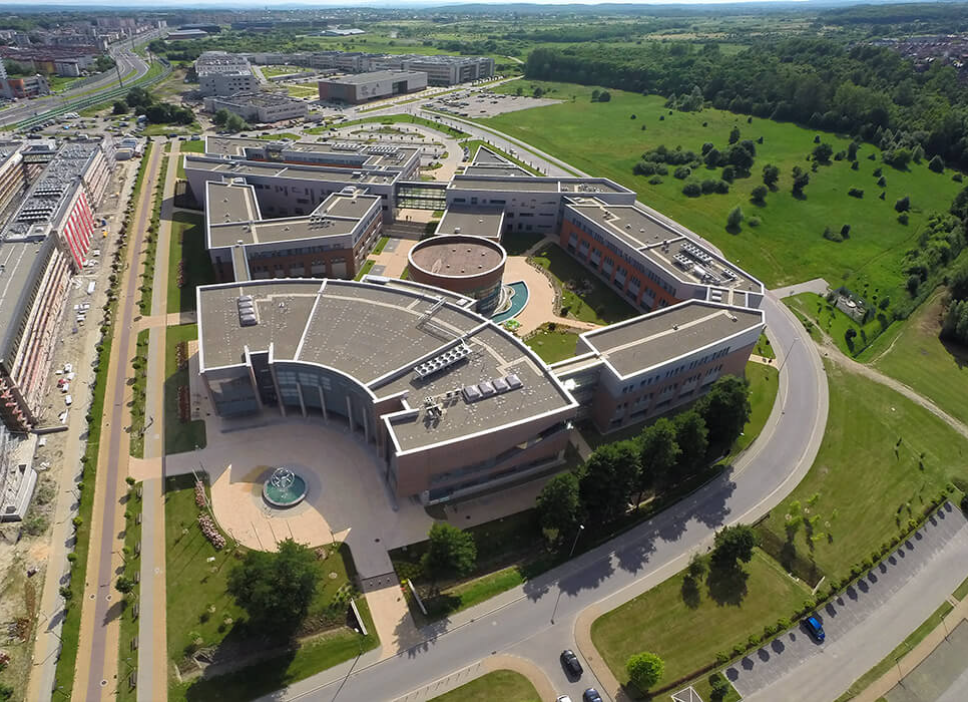

O Wydziale Fizyki, Astronomii i Informatyki Stosowanej UJ
Wydział Fizyki, Astronomii i Informatyki Stosowanej UJ to nowoczesny ośrodek nauki i dydaktyki,
który łączy badania w dziedzinach fizyki, astronomii oraz informatyki stosowanej. Powstał
w wyniku połączenia różnych jednostek, tworząc interdyscyplinarne środowisko badawcze.
Wydział współpracuje z wiodącymi ośrodkami badawczymi w kraju i za granicą, oferując
studentom możliwość rozwoju w unikalnych kierunkach studiów. Studenci mają dostęp do
nowoczesnych laboratoriów oraz szerokiej oferty zajęć praktycznych, badań i projektów.
Wydział organizuje liczne konferencje, seminaria i warsztaty naukowe, promując rozwój
innowacyjnych technologii. Absolwenci wydziału są cenieni na rynku pracy w kraju i na świecie,
zdobywając pozycje w sektorach takich jak IT, przemysł technologiczny, badania kosmiczne,
medycyna i inne. Wydział wspiera także popularyzację nauki i aktywnie uczestniczy w rozwoju
społeczności akademickiej, inspirując młode pokolenia do odkrywania nauk ścisłych.
 


